library(pacman)
p_load("ggplot2", "gganimate", "agridat", "patchwork", "sf", "ggtext", "dplyr")Data Viz I
figures
graphics
plots
ggplot2
tidyverse
Description
In this class, we will explore advanced visualization techniques using ggplot2. You’ll learn how to fine-tune plots by modifying shapes, lines, legends, and adding custom titles and annotations. We will continue working with the agridat::lasrosas.corn dataset.

1 Learning Objectives
By the end of this session, you will: 1. Customize plot aesthetics, including point shapes, line types, and colors. 2. Modify legends and axis labels for better readability. 3. Use annotations and text elements to highlight key data points. 4. Adjust themes and layouts for professional presentation.
Required Packages
Install the necessary packages for this class:
2 Datasets: Las Rosas Corn Data
We’ll use the agridat::lasrosas.corn dataset, focusing on yield, nitro levels, years, and spatial data.
corn_data <- agridat::lasrosas.corn %>%
mutate(Year = as.factor(year))
glimpse(corn_data)Rows: 3,443
Columns: 10
$ year <int> 1999, 1999, 1999, 1999, 1999, 1999, 1999, 1999, 1999, 1999, 1999…
$ lat <dbl> -33.05113, -33.05115, -33.05116, -33.05117, -33.05118, -33.05120…
$ long <dbl> -63.84886, -63.84879, -63.84872, -63.84865, -63.84858, -63.84851…
$ yield <dbl> 72.14, 73.79, 77.25, 76.35, 75.55, 70.24, 76.17, 69.17, 69.77, 6…
$ nitro <dbl> 131.5, 131.5, 131.5, 131.5, 131.5, 131.5, 131.5, 131.5, 131.5, 1…
$ topo <fct> W, W, W, W, W, W, W, W, W, W, W, W, W, W, W, W, W, W, W, W, W, W…
$ bv <dbl> 162.60, 170.49, 168.39, 176.68, 171.46, 170.56, 172.94, 171.86, …
$ rep <fct> R1, R1, R1, R1, R1, R1, R1, R1, R1, R1, R1, R1, R1, R1, R1, R1, …
$ nf <fct> N5, N5, N5, N5, N5, N5, N5, N5, N5, N5, N5, N5, N5, N5, N5, N5, …
$ Year <fct> 1999, 1999, 1999, 1999, 1999, 1999, 1999, 1999, 1999, 1999, 1999…nass_soybean <- agridat::nass.soybean %>%
mutate(Year = as.factor(year))
select_states <- c("Kansas", "Iowa", "Illinois", "Missouri")
glimpse(nass_soybean)Rows: 2,528
Columns: 5
$ year <int> 1924, 1924, 1924, 1924, 1924, 1924, 1924, 1924, 1924, 1924, 1924…
$ state <fct> Alabama, Arkansas, Delaware, Georgia, Illinois, Indiana, Iowa, K…
$ acres <dbl> 3000, 3000, 12000, 10000, 115000, 66000, 10000, 2000, 9000, 8000…
$ yield <dbl> 6.5, 6.5, 11.0, 5.5, 12.0, 9.9, 12.0, 11.0, 9.5, 8.0, 11.8, 13.0…
$ Year <fct> 1924, 1924, 1924, 1924, 1924, 1924, 1924, 1924, 1924, 1924, 1924…3 1. Customizing ggplot2 Visualizations
3.1 Define custom palettes
my_colors <- c("#1e6091", "#f9c74f", "#9b2226", "#599999", "#8e5572")3.2 Histogram with Adjusted Transparency and Custom Bins
# Density
density_01 <-
corn_data %>%
ggplot(aes(x = yield)) +
geom_density(aes(fill = Year), color = "grey15", alpha = 0.5)+
labs(title = "Yield Distribution Across Years", x = "Yield (qq/ha)", y = "Count") +
scale_fill_manual(values = my_colors)+
theme_classic()
# Histogram
histo_01 <-
ggplot(corn_data, aes(x = yield)) +
geom_histogram(aes(fill = Year), bins = 20, alpha = 0.6, color = "black") +
labs(title = "Yield Distribution Across Years", x = "Yield (qq/ha)", y = "Count") +
scale_fill_manual(values = my_colors)+
geom_rug(aes(color = Year), alpha = 0.5)+
scale_color_manual(values = my_colors)+
theme_classic()
histo_01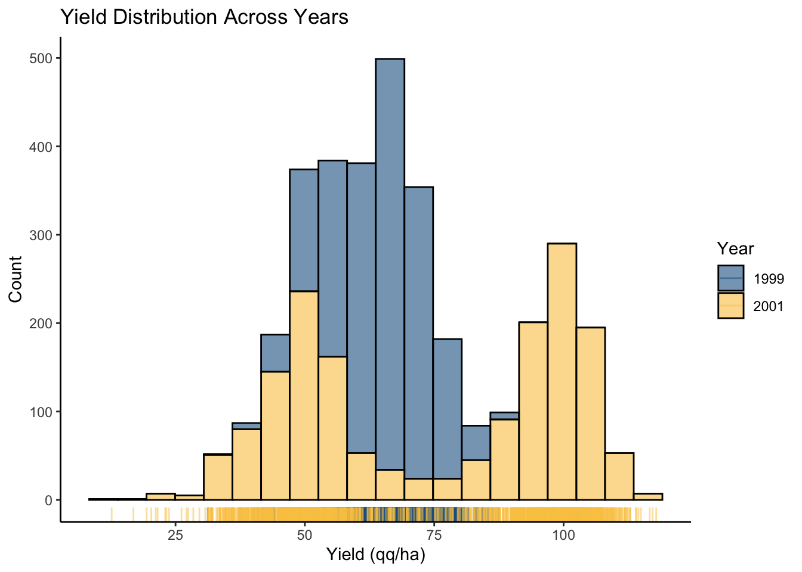
# Faceting by Year
histo_02 <-
corn_data %>%
ggplot(aes(x = yield)) +
geom_histogram(aes(fill = Year), bins = 30, alpha = 0.6, color = "black") +
labs(title = "Yield Distribution Across Years", x = "Yield (qq/ha)", y = "Count") +
scale_fill_manual(values = my_colors)+
geom_rug(aes(color = topo), alpha = 0.5)+
scale_color_manual(values = my_colors)+
facet_wrap(~topo)+
theme_classic()+
theme(legend.position = "none")
histo_02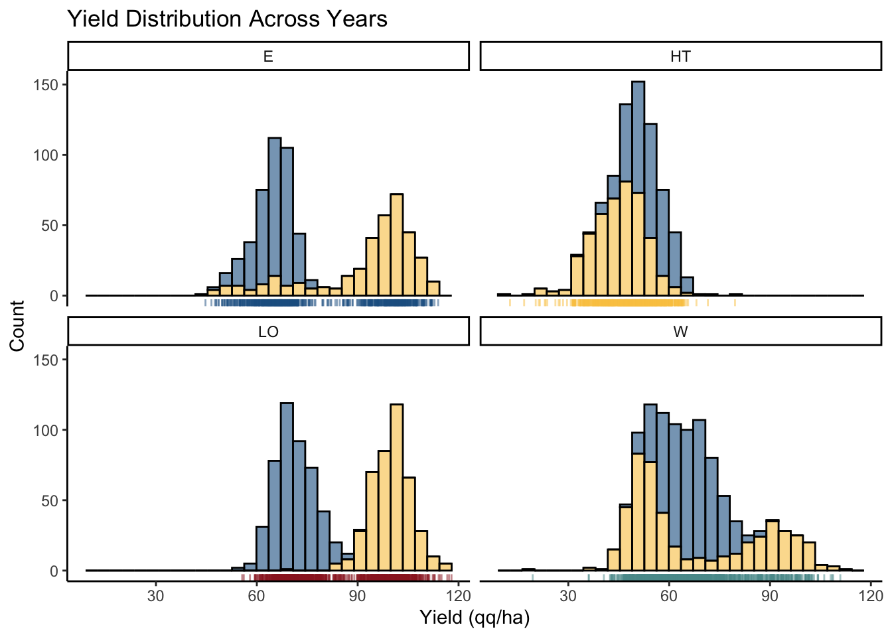
corn_data %>%
ggplot(aes(x = yield)) +
geom_histogram(aes(fill = topo), bins = 20, alpha = 0.6, color = "black") +
labs(title = "Yield Distribution Across Years", x = "Yield (qq/ha)", y = "Count") +
scale_fill_manual(values = my_colors)+
geom_rug(aes(color = topo), alpha = 0.5)+
scale_color_manual(values = my_colors)+
facet_wrap(~topo)+
theme_classic()+
theme(legend.position = "none")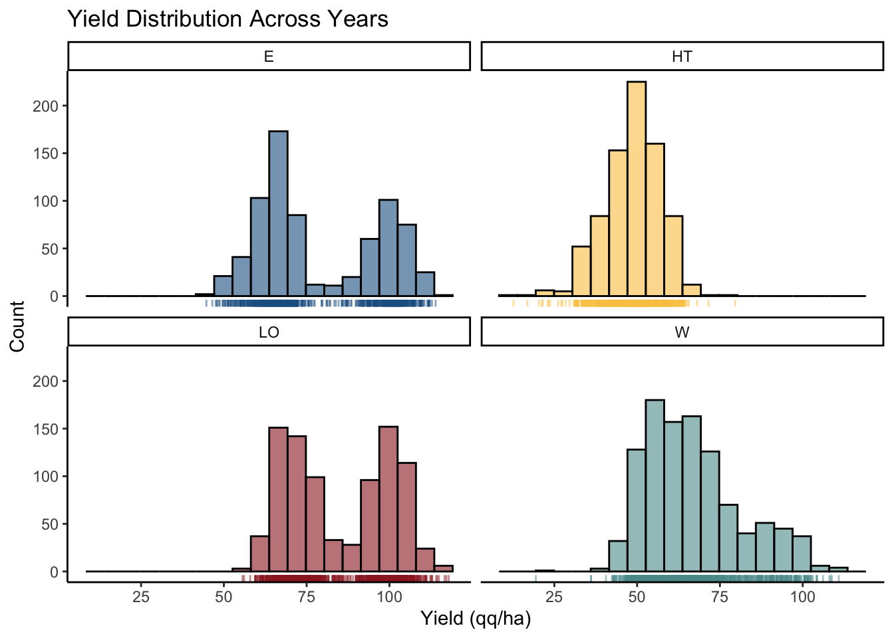
3.3 Column/Bar plot
# Prepare summarized data frame
aggregated_corn <- corn_data %>% group_by(Year, year, nitro, nf) %>%
summarize(yield_mean = mean(yield),
sd_yield = sd(yield))`summarise()` has grouped output by 'Year', 'year', 'nitro'. You can override
using the `.groups` argument.# Column plot
colplot_01 <-
aggregated_corn %>%
ggplot() +
geom_col(aes(x = nf, y = yield_mean, fill = Year),
color = "grey25") + # Triangle shape
scale_fill_manual(values = my_colors)+
labs(title = "Yield vs. Nitrogen Levels", x = "Nitrogen (kg/ha)", y = "Yield (qq/ha)") +
facet_wrap(~Year)+
theme_classic()
colplot_01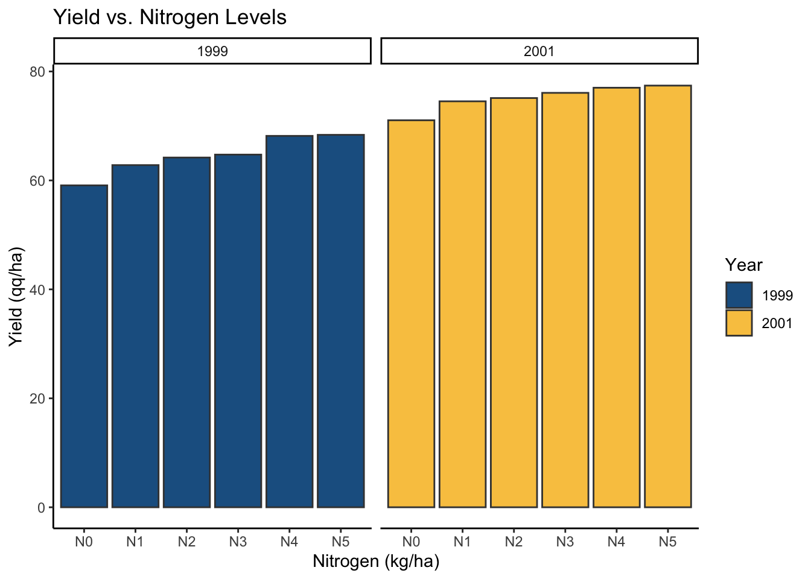
# Add SD bars
colplot_02 <-
colplot_01 +
geom_errorbar(data = aggregated_corn,
aes(ymin = yield_mean - sd_yield,
ymax = yield_mean + sd_yield,
x = nf),
width = .25)
colplot_02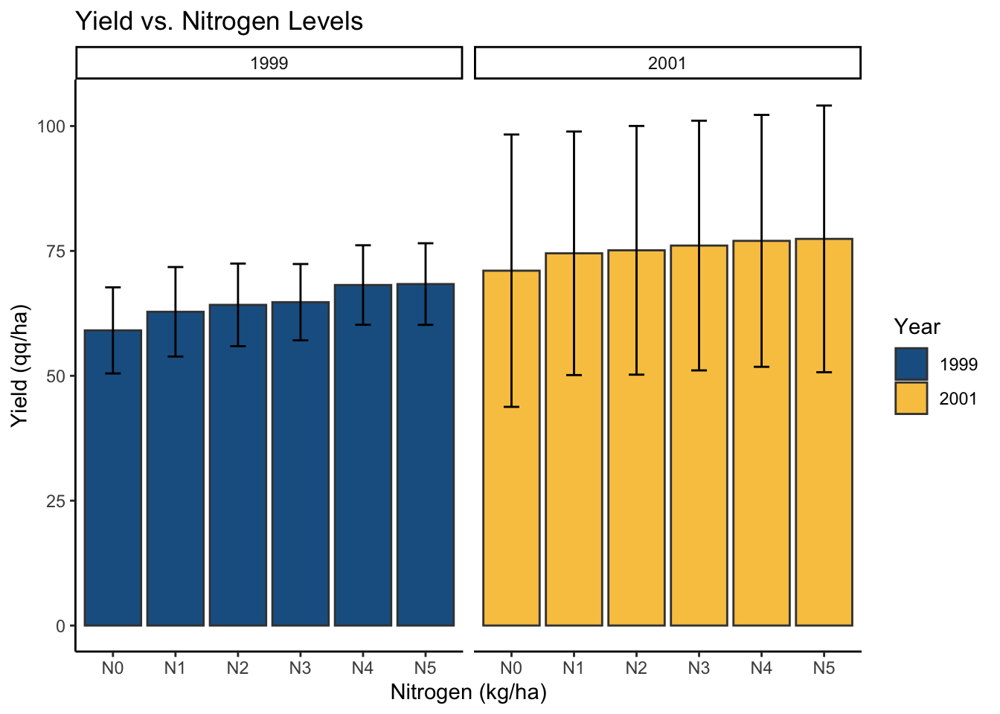
# facet by topography
aggregated_topo <- corn_data %>% group_by(Year, year, nitro, nf, topo) %>%
summarize(yield_mean = mean(yield),
sd_yield = sd(yield))`summarise()` has grouped output by 'Year', 'year', 'nitro', 'nf'. You can
override using the `.groups` argument.# dacet by topography and Year
colplot_03 <-
aggregated_topo %>%
ggplot() +
geom_col(aes(x = nf, y = yield_mean, fill = topo),
color = "grey25", alpha = 0.5) + # Triangle shape
geom_errorbar(aes(ymin = yield_mean - sd_yield,
ymax = yield_mean + sd_yield, x = nf),
width = .25)+
labs(title = "Yield vs. Nitrogen Levels", x = "Nitrogen (kg/ha)", y = "Yield (qq/ha)") +
facet_grid(topo~Year)+
scale_fill_manual(values = my_colors)+
theme_classic()
colplot_03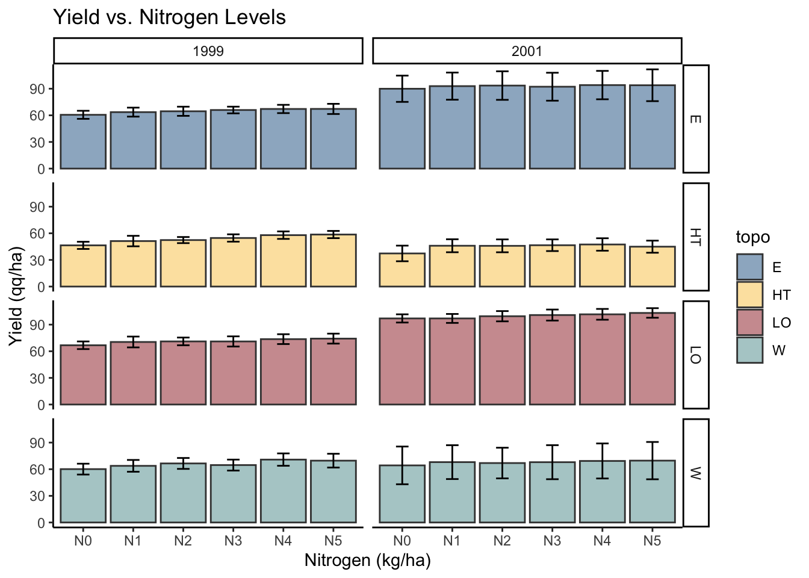
3.4 Scatter Plot with Custom Shapes and Line Types
corn_data %>%
ggplot(aes(x = nitro, y = yield, color = factor(year))) +
geom_point(size = 3, shape = 17) + # Triangle shape
geom_smooth(method = "lm", se = FALSE, linetype = "dashed") +
labs(title = "Yield vs. Nitrogen Levels", x = "Nitrogen (kg/ha)", y = "Yield (qq/ha)") +
theme_minimal()`geom_smooth()` using formula = 'y ~ x'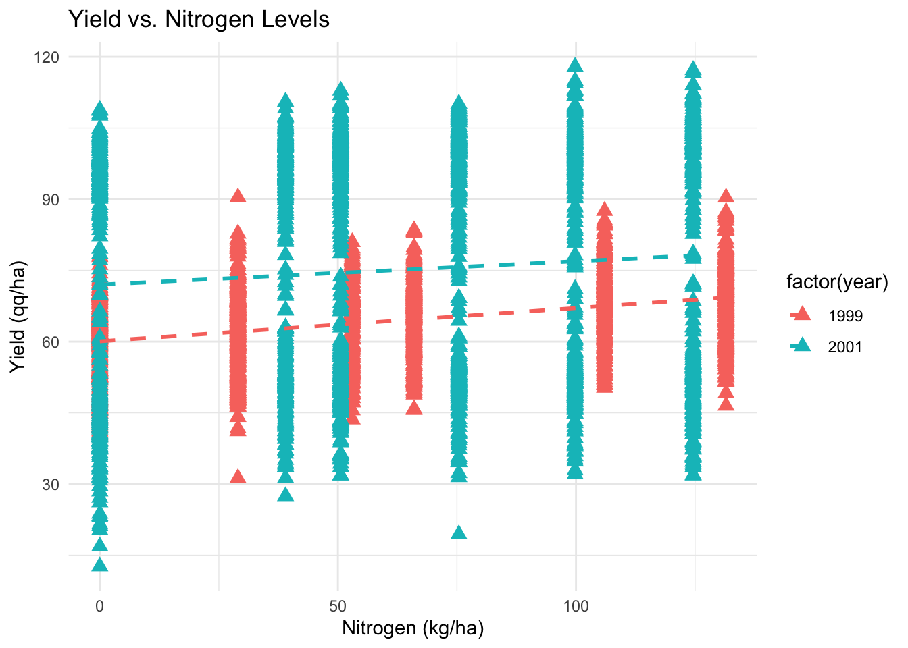
3.5 BoxPlot with Custom Shapes and Line Types
corn_data %>%
ggplot(aes(x = nf, y = yield)) +
geom_boxplot(aes(fill = Year), color = "grey15", size = 0.5) +
geom_jitter(aes(x = nf, y = yield, color=Year), size = 0.1)+
scale_fill_brewer(palette=2, type = "qual")+
scale_color_brewer(palette=2, type = "qual")+
labs(title = "Yield vs. Nitrogen Levels",
x = "Nitrogen (kg/ha)", y = "Yield (qq/ha)") +
facet_wrap(~Year)+
theme_classic()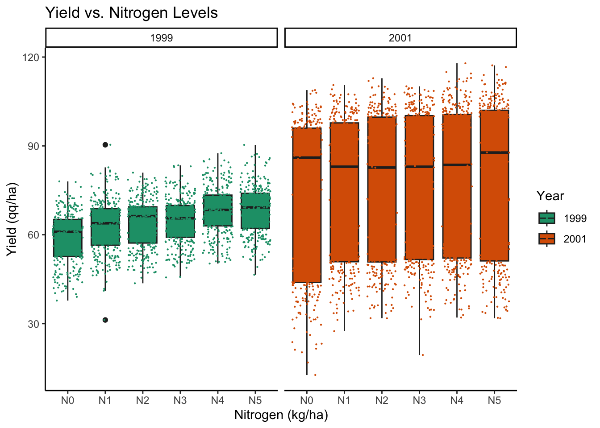
4 2. Axis & Titles
scatter_plot <-
corn_data %>%
ggplot(aes(x = nitro, y = yield, color = topo)) +
geom_point()+
# Add labels
labs(title = "Yield vs. Nitrogen",
subtitle = "Data from Las Rosas Trials",
x = "Nitrogen (kg/ha)",
y = "Yield (qq/ha)") +
# Add manual color scale
scale_color_manual(values = my_colors)+
# Modify scale of x-axis
scale_x_continuous(limits = c(0,140), breaks = seq(0,150, by=30))+
facet_grid(Year~topo)+
theme_classic()
scatter_plot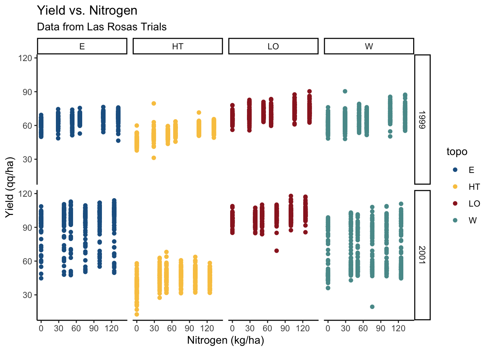
# Update
scatter_plot +
# Add regression line
geom_smooth()+
theme(legend.position = "none", # Remove legend
# Add panel border
panel.border = element_rect(linetype = "solid", fill = NA),
# Edit axis title text
axis.title = element_text(face = "bold", color = "red"))`geom_smooth()` using method = 'loess' and formula = 'y ~ x'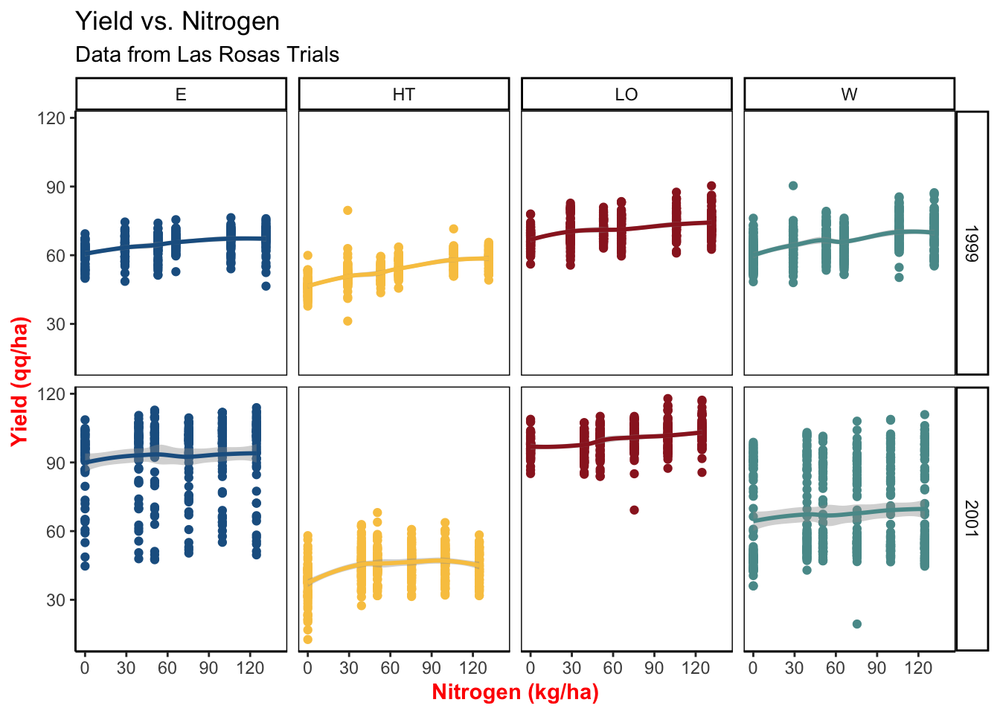
5 3. Annotating text
colplot_01 +
geom_text(aes(label = round(yield_mean,0), x = nf, y = yield_mean + 3))+
scale_color_manual(values=my_colors)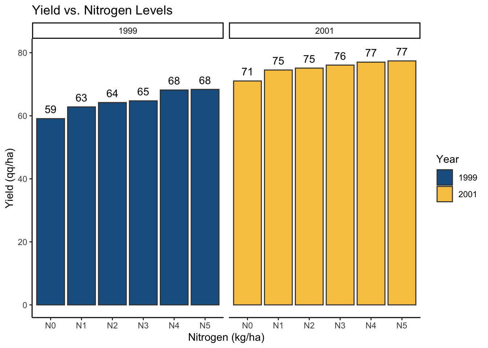
6 4. Adjusting Themes for Presentation
base_plot <- ggplot(corn_data, aes(x = nitro, y = yield, color = factor(year))) +
geom_point(size = 3)
base_plot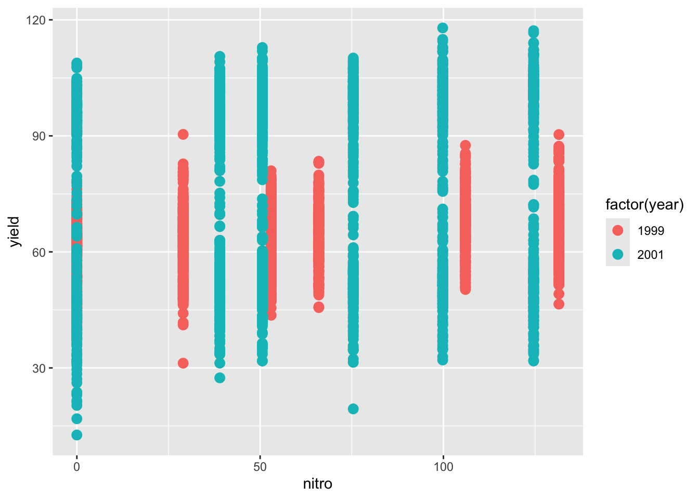
base_plot +
labs(title = "Fine-Tuned Yield vs. Nitrogen Plot") +
theme_classic(base_size = 14) + # Larger base font
theme(legend.position = "bottom")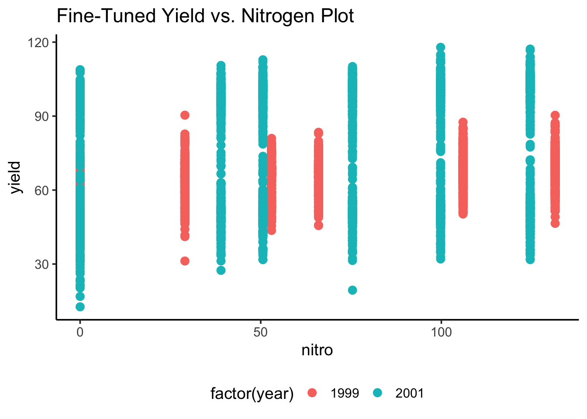
7 5. Combining Multiple Plots with Custom Layouts
p1 <- scatter_plot
p2 <- histo_02
p1 + p2 + plot_layout(ncol = 1)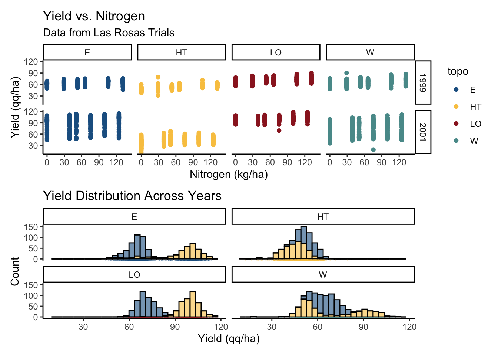
8 6. Animated plots
static_plot <-
nass_soybean %>%
dplyr::filter(state %in% select_states) %>%
ggplot(aes(x = year, y = yield)) +
geom_point(aes(fill = state,
group = seq_along(year)),
color = "grey15", shape = 21, size = 2, alpha = 0.5)+
scale_fill_manual(values=my_colors)+
#scale_color_manual(values=my_colors)+
facet_wrap(~state)+
theme_classic()+
# Add panel border
theme(legend.position = "none",
panel.border = element_rect(linetype = "solid", fill = NA))
static_plot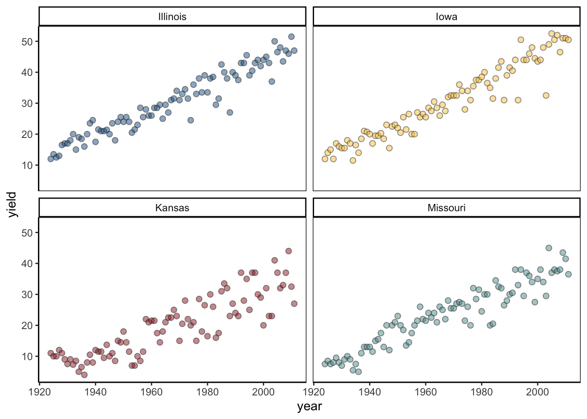
animated_plot <-
static_plot+
transition_reveal(year)
animated_plot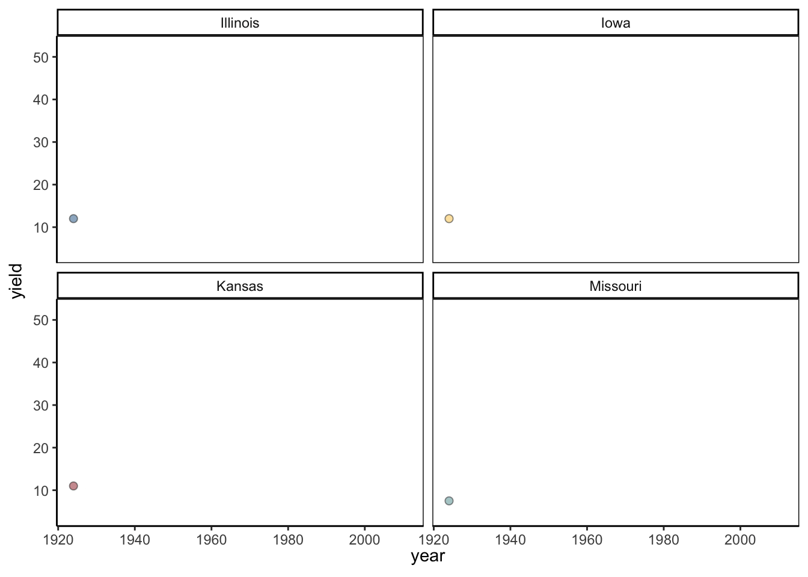
# Render the animation
# gganimate::animate(animated_plot, fps = 20, duration = 4,
# width = 400, height = 300,
# renderer = gifski_renderer())
# Save
# anim_save(filename = "animated_plot.gif", animation = last_animation())9 Conclusion
This expanded tutorial provides various ggplot2 customization techniques relevant to agricultural research. Experiment with different styling options to enhance the clarity and impact of your visualizations!